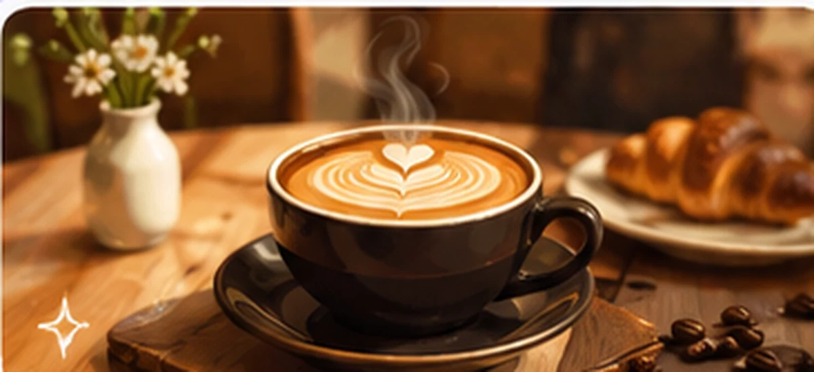
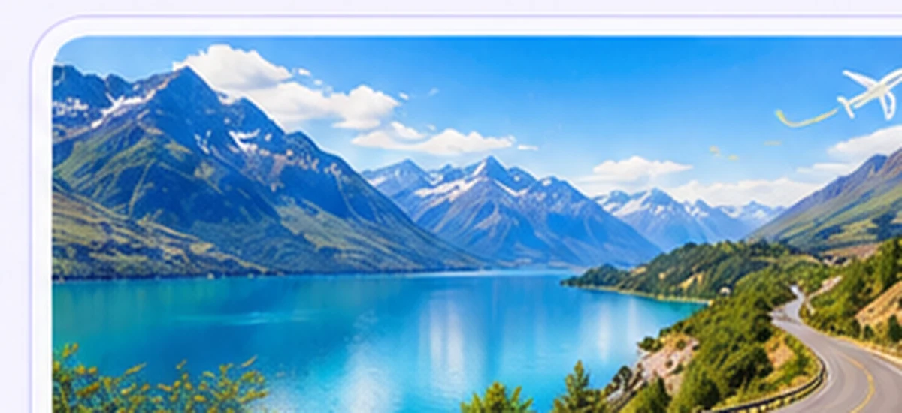
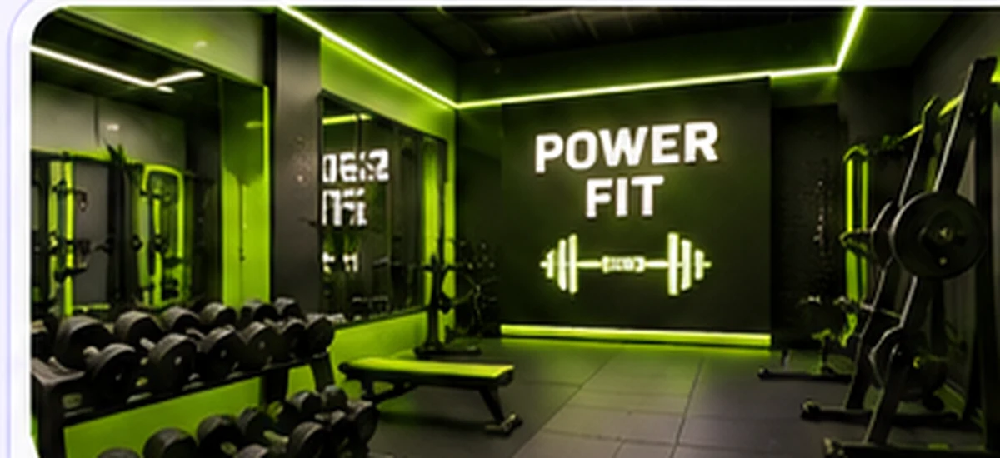
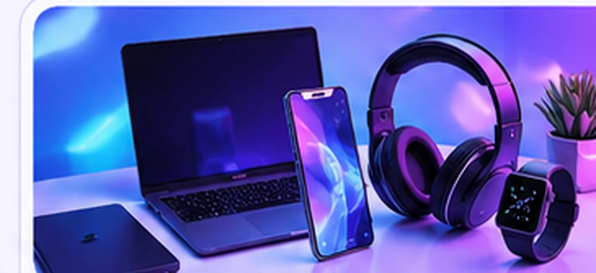
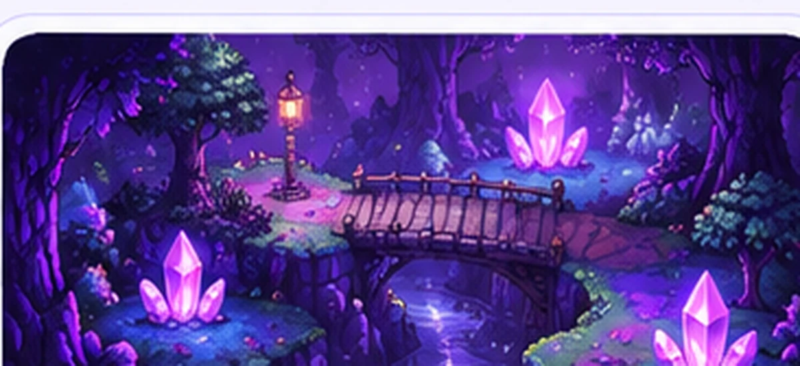
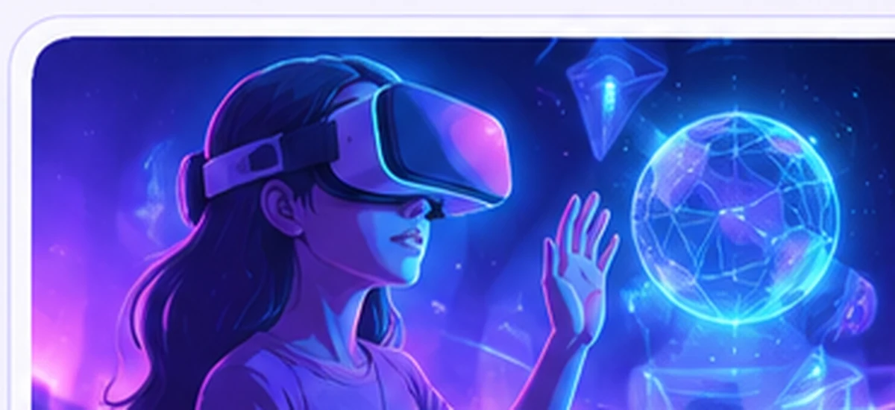

FORMACIÓN PRINCIPAL
Técnica Superior en Desarrollo de Software
Formación en programación, desarrollo de aplicaciones, diseño de sistemas y resolución de problemas.
Perfil académico simuladoCATHERINE MORALES ✦
DESARROLLO DE SOFTWARE · CREATIVE TECHNOLOGIST
Me interesa crear experiencias digitales que combinen tecnología, creatividad y funcionalidad. Exploro nuevas herramientas y transformo ideas en proyectos.
Un poco de mi universo
Soy una desarrolladora de software en formación, interesada en la tecnología, el diseño y la creación de experiencias digitales.
Disfruto aprender mediante proyectos: desde páginas web e interfaces interactivas hasta videojuegos y experiencias relacionadas con la realidad virtual.
Mi objetivo es seguir desarrollando habilidades técnicas y creativas para construir soluciones útiles, claras y originales.
Perfil profesional simulado para fines académicos.
Las mejores ideas empiezan con un ¿y si…?
✳Dos formas de resolver problemas y expresar ideas.
Aprendizaje y especialización
Una formación orientada al desarrollo de soluciones digitales, la programación y la gestión de datos.
FORMACIÓN PRINCIPAL
Formación en programación, desarrollo de aplicaciones, diseño de sistemas y resolución de problemas.
Perfil académico simuladoESPECIALIZACIÓN
Conocimientos sobre organización, consulta, administración y gestión de información.
Perfil académico simuladoIDIOMAS
Nivel intermedio: comprensión de textos y comunicación en situaciones cotidianas y académicas.
Nivel declarado en el perfil simuladoAprendizaje complementario
La tecnología cambia constantemente. Aprender nuevas herramientas también forma parte del proceso.
CURSO DE FORMACIÓN
Introducción a modelos generativos, ingeniería de prompts, aplicaciones prácticas y uso responsable de herramientas de inteligencia artificial.
Formación simulada para la presentación académicaMi caja de herramientas
Tecnologías y herramientas utilizadas en distintos proyectos.
Estructura web
Estilos y diseño
Interactividad
Aplicaciones web
Lógica y desarrollo
Consultas y datos
Videojuegos 2D
Realidad virtual
Control de versiones
Repositorios
Editor de código
Herramientas creativas
Sigo aprendiendo y sumando herramientas en cada proyecto.
Una selección de trabajos
Cada proyecto es una oportunidad para aprender algo nuevo y llevar una idea un paso más allá.

01 — SITIO WEBUna experiencia web para una cafetería, con estética cálida, catálogo y funciones interactivas.

02 — SITIO WEBUna propuesta visual de temática turística para presentar destinos e invitar a explorar.

03 — SITIO WEBUn sitio de gimnasio con una identidad deportiva, contraste fuerte y energía visual.

04 — WEB INTERACTIVAInterfaz de tienda tecnológica de demostración, con productos y elementos interactivos.

05 — VIDEOJUEGOVideojuego narrativo 2D que combina programación, exploración y una historia centrada en emociones.

06 — REALIDAD VIRTUALExperiencia interactiva del Sistema Solar desarrollada con A-Frame, disponible en el navegador.
✦ Las páginas web se abren desde los archivos incluidos en esta entrega. Proyecto VR abre su experiencia publicada. Imperdonables incluye una vista previa de gameplay.
¿Vemos qué podemos crear?
Podés conocer más de mi trabajo, explorar el código de mis proyectos y encontrarme en mis redes.
Visitar mi GitHub ↗ ✧ ✦DETALLES DEL PROYECTO